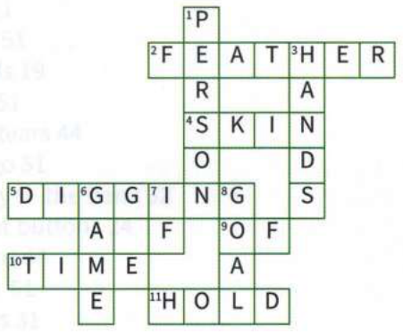

Đến lượt bạn (Over to you)
Một số thành ngữ khác mà bạn có thể tìm thấy là:
be caught between a rock and a hard place (tiến thoái lưỡng nan / ở vào thế tiến thoái lưỡng nan): Cho dù tôi quyết định làm gì thì cũng sẽ có rắc rối xảy ra. Tôi đang rơi vào thế tiến thoái lưỡng nan (caught between a rock and a hard place).
be a hard act to follow (là hình mẫu khó vượt qua / khó lòng thay thế): Colin là một người quản lý giỏi đến nỗi anh ấy sẽ là một hình mẫu khó vượt qua (hard act to follow). Tôi không muốn đảm nhận công việc của anh ấy khi anh ấy rời đi.
be too much like hard work (quá vất vả / tốn nhiều công sức): Tôi chắc chắn không muốn giúp bố trồng mấy bụi hoa hồng. Việc đó nghe có vẻ quá vất vả đối với tôi (too much like hard work).
Tôi thích Tina. Cô ấy là người her own person (có cá tính riêng / tự lập). Thực tế, cô ấy rất đúng là a woman after my own heart (người phụ nữ rất hợp ý tôi). Nhưng tôi không thích bạn trai của cô ấy, Karl. Anh ta lúc nào cũng blowing his own trumpet (huênh hoang khoe khoang về bản thân), và khi họ đến căn hộ của tôi, anh ta hành xử cứ như thể mình owns the place (làm chủ nơi này / là ông chủ ở đây vậy). Tôi nghĩ đã đến lúc họ nên went their own ways (đường ai nấy đi). Thực ra, tôi nghĩ cô ấy sẽ thực sự come into her own (khẳng định được bản thân / phát huy hết khả năng của mình) nếu họ làm vậy.
